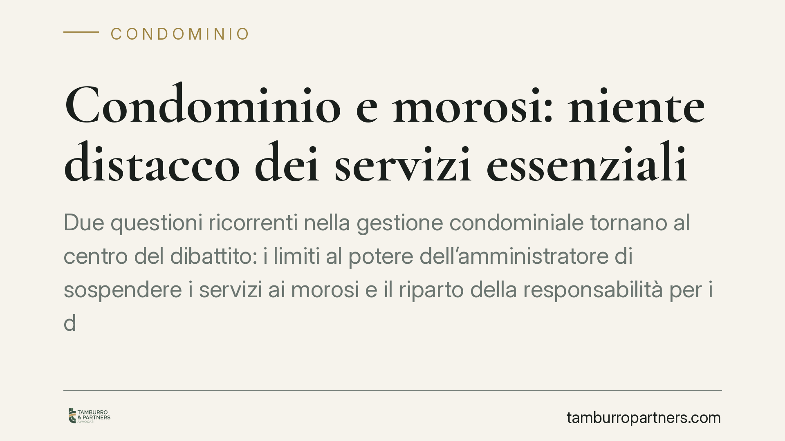

Condominio e morosi: niente distacco dei servizi essenziali
Due questioni ricorrenti nella gestione condominiale tornano al centro del dibattito: i limiti al potere dell'amministratore di sospendere i servizi ai morosi e il riparto della responsabilità per i danni da infiltrazioni dal lastrico solare o dal terrazzo di uso esclusivo. Il bilanciamento tra tutela del credito condominiale e diritti fondamentali impone cautele operative precise.

Il caso
L'amministratore di condominio dispone di strumenti per recuperare le quote non versate, ma questi strumenti non sono illimitati. Un orientamento giurisprudenziale di merito – di cui si ha notizia da pronunce del Tribunale di Roma di cui, allo stato, non risultano pubblicati gli estremi identificativi (numero, anno e sezione) – ha ribadito due divieti: non si possono sospendere i servizi essenziali ai condomini morosi (si pensi all'acqua potabile o al riscaldamento) e non è consentito l'accesso forzato alle abitazioni private per eseguire il distacco.
Sul secondo fronte, la Corte di Cassazione conferma la responsabilità solidale tra condominio e proprietario per i danni da infiltrazioni, tema che va letto alla luce del leading case delle Sezioni Unite.
Inquadramento normativo
L'art. 63, comma 3, disp. att. cod. civ. consente all'amministratore di sospendere il condomino moroso "dalla fruizione dei servizi comuni suscettibili di godimento separato" quando la mora nel pagamento si sia protratta per un semestre. La norma richiede quindi due presupposti cumulativi: la durata semestrale della morosità e la natura "separabile" del servizio.
Il punto critico è proprio quest'ultimo. Un servizio è "suscettibile di godimento separato" quando può essere interrotto per la singola unità senza intaccare l'erogazione agli altri condomini e senza ledere diritti indisponibili. Qui entra in gioco l'art. 32 Cost., che tutela la salute come diritto fondamentale. La sospensione di servizi che incidono su condizioni essenziali di vita e abitabilità – acqua potabile, riscaldamento nei mesi freddi – confligge con tale tutela e con il principio di proporzionalità. Di qui il divieto di distacco e, a maggior ragione, di qualsiasi accesso coattivo all'immobile privato, che richiederebbe un titolo giudiziale.
La solidarietà per i danni da infiltrazioni
Sul riparto della responsabilità per infiltrazioni provenienti dal lastrico solare o dal terrazzo a livello di uso esclusivo, il riferimento obbligato è Cass. Sez. Un. n. 9449/2016. Le Sezioni Unite hanno chiarito che la responsabilità va imputata secondo i criteri dell'art. 1126 cod. civ., che disciplina il riparto delle spese di manutenzione: un terzo a carico di chi ha l'uso esclusivo del lastrico o del terrazzo, due terzi a carico dei condomini cui la copertura serve da tetto.
Questo criterio di ripartizione interna si combina con l'art. 2055 cod. civ. sulla solidarietà passiva: nei confronti del terzo danneggiato, condominio e titolare dell'uso esclusivo rispondono in solido, salvo poi regolare tra loro i rapporti secondo la proporzione 1/3 – 2/3. Il danneggiato, dunque, può agire per l'intero verso l'uno o l'altro soggetto; la ripartizione opera solo nei rapporti interni.
Implicazioni pratiche
Per l'amministratore, la lezione è netta: il recupero del credito passa dalle vie giudiziali (decreto ingiuntivo immediatamente esecutivo ex art. 63, comma 1, disp. att. cod. civ.) e non dall'autotutela sui servizi essenziali. Un distacco illegittimo espone l'amministratore – e il condominio – a richieste risarcitorie e a possibili profili di responsabilità personale.
Per i condomini danneggiati da infiltrazioni, è utile sapere che possono rivolgersi sia al condominio sia al titolare del terrazzo di uso esclusivo, senza dover frazionare la domanda. Per chi ha l'uso esclusivo del lastrico o del terrazzo, invece, resta ferma l'esposizione per un terzo nei rapporti interni.
Cosa fare in concreto
- Verifica il presupposto temporale: prima di valutare qualsiasi misura sul moroso, accerta che la mora si sia protratta per un semestre ai sensi dell'art. 63, comma 3, disp. att. cod. civ.
- Escludi i servizi essenziali: non sospendere acqua, riscaldamento o altri servizi che incidono su salute e abitabilità; limita l'eventuale sospensione ai soli servizi realmente separabili e non essenziali.
- Evita ogni accesso forzato alle unità private: senza titolo giudiziale è illegittimo e fonte di responsabilità.
- Privilegia il recupero giudiziale: attiva il decreto ingiuntivo e le successive azioni esecutive per le quote non versate.
- Sui danni da infiltrazioni, documenta origine e causa del fenomeno e applica il criterio 1/3 – 2/3 dell'art. 1126 cod. civ. nel riparto interno, ferma la solidarietà verso il danneggiato.
Consigliamo di aggiornare il regolamento condominiale e le procedure interne di recupero crediti alla luce di questi limiti, così da ridurre il rischio di contenzioso.
---
Contributo informativo a cura di Tamburro & Partners - Avv. Giuseppe Tamburro. Non costituisce parere legale.
Ogni condominio ha una storia a sé.
Se gestisci un'amministrazione e vuoi un confronto su una specifica questione condominiale, scrivi allo studio. Ti rispondiamo entro un giorno lavorativo.